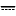

JBeam
Structural Analysis for the Java-Platform
Chapter 1
Note
This document assumes the use of the english localisation (default).
If using another language package the names will differ accordingly.
A simple example
Given the following system
the clamping moment at node A is searched.
To start a new problem description launch JBeam or
use the menu command 'File-new'. You can also make use
of the toolbar button .
Now insert node A. This node is fully constrained, so
use the menu command 'Node - rxz constrained'.
Move the mouse to the position (X = -5 / Z = 0), which is
displayed in the status line and left-click to place the node.
Node B will be inserted in the same way at position (X = 5 / Z = 0),
but choose 'Node - z constrained' this time
to select the appropriate support condition.
You can also insert an unconstrained Node (symbol  )
and edit the support condition in the property window popping up after right-clicking
the node.
The properties of every node and element can be edited in this way.
To insert nodes which are not located on the current snap grid (e.g. X=10.125) just
change there coordinates in the property window after inserting them
somewhere.
)
and edit the support condition in the property window popping up after right-clicking
the node.
The properties of every node and element can be edited in this way.
To insert nodes which are not located on the current snap grid (e.g. X=10.125) just
change there coordinates in the property window after inserting them
somewhere.
To delete a wrong element select it first. Use 'Edit-select' or
 to switch into 'Select' mode and click on
the element. The current mode is displayed in the status line on
the right hand side.
All selected elements will be displayed in blue colour.
Delete them using
to switch into 'Select' mode and click on
the element. The current mode is displayed in the status line on
the right hand side.
All selected elements will be displayed in blue colour.
Delete them using  or 'Edit - delete'.
or 'Edit - delete'.
Now that all required nodes are created you can insert the beam
element.
Use  or
'Element - EBS beam' to switch to beam insertion mode.
Click on the start node and then on the end node. You will
get an error message in the status line if no node was found
or a rubber band if the start node could be identified.
To abort element insertion just right click somewhere.
or
'Element - EBS beam' to switch to beam insertion mode.
Click on the start node and then on the end node. You will
get an error message in the status line if no node was found
or a rubber band if the start node could be identified.
To abort element insertion just right click somewhere.
In addition to 'EBS beam' (beam element with shear deformation)
the following elements are available:
- 'EB beam' - classic Euler-Bernoulli beam without
shear deformation
 'Truss' - truss element without bending
'Truss' - truss element without bending
The 'EBS beam' element is the most flexible one and should be preferred.
Caution: If you connect only truss elements to a node you need
to clamp the rotational degree of freedom to avoid a cinematic system.
Now your drawing area should look like this:

To impose the loading you have to edit the beam properties.
Select the beam and use or 'Edit - properties'.
As a short-cut you can also just right click the element.
Enter 5 in the field 'vk' of the 'Edit EBBeam' dialogue.
To activate the result output for the element enter a name
in the label field - e.g. 'Element 1'.
Now your drawing area should look like this:

Assign the labels 'A' and 'B' to the two nodes in the same way.
The problem definition is complete. Calculate the results using
'Results - calculate static'.
To show the displacement activate 'Results - show displacement'.
You can display the bending moments using 'Results - show moment'.
The moment diagram will be scaled improperly large.
To fix this change the scaling factor to 0.2 in the dialogue 'Preferences - view'.
Displacements:

Bending moments:

Shear forces:

You can get a formatted output of the numerical
results in HTML.
Use 'Results - write to HTML-file' and enter
an appropriate file name (e.g. 'Problem1.html').
Now open the exported file in your web browser.
You will see in three sections for every labeled element
the support reactions, the nodal displacements and the stress resultants.
In this case the searched clamping moment is reported
as 'M' at node 'A' as well as 'Mi' of 'Element 1' with
-29,167 kN.
An alternate way to get results without writing to a file
is using the info mode with 'edit - show information'
or  .
Just click on the nodes or elements you are interested in and you
will get the numerical results - even for elements you have not
assigned a label.
.
Just click on the nodes or elements you are interested in and you
will get the numerical results - even for elements you have not
assigned a label.
You can save the entered problem description using
or 'File - save'.